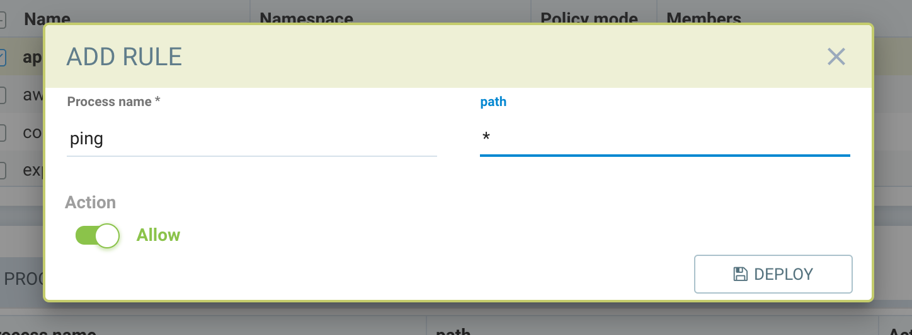
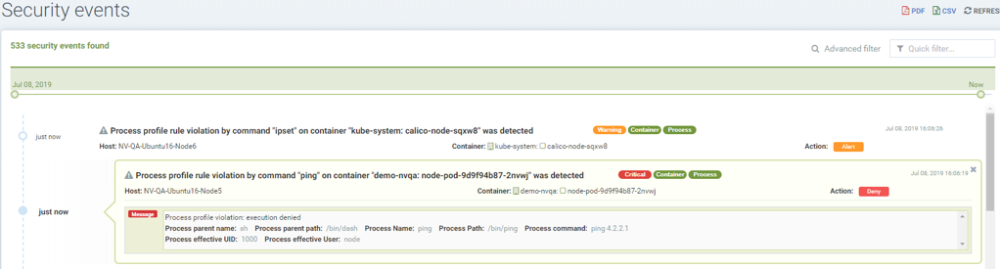

Process Profile Rules
Policy → Groups → Process Profile Rules
There are two types of Process/File protections in SUSE® Security. One is Zero-drift, where allowed process and file activity are automatically determined based on the container image, and second is a behavioral learning based. Each can be customized (rules added manually) if desired.
|
There is a limitation when running on systems with the AUFS file system, whereby a race condition can be experienced and the process rules are not enforced for blocking (Protect mode). However, these violations are still reported in the security event logs. |
Zero-drift Process Protection
This is the default mode for process and file protections. Zero-drift automatically allows only processes which originate from the parent process that is in the original container image, and does not allow file updates or new files to be installed. When in Discover or Monitor mode, zero-drift will alert on any suspicious process or file activity. In Protect mode, it will block such activity. Zero-drift does not require processes to be learned or added to an allow-list. Disabling zero-drift for a group will cause the process and file rules listed for the group to take effect instead.
|
(1) The process/file rules listed for each group are always applied, even when zero-drift is enabled. This offers a way to add allow/deny exceptions to the base zero-drift protections. Keep in mind that if a group starts in Discover mode, process/file rules can be automatically added to the list, and should be reviewed and edited before moving to Monitor/Protect modes. (2) It’s recommended to set system-trusted (de-facto) namespaces (system and network-plugin) as BASIC protection. Example namespaces to set are "kube-system", "openshift-ovn-kubernetes", "ovn-*" etc. Set other application pods as zero-drift. |
The ability to enable/disable zero-drift mode is in the console in Policy → Groups. Multiple groups can be selected to toggle this setting for all selected groups.
Basic Mode Process Protection
Zero-drift can be disabled, switching to Basic process protection. Basic protection enforces process/file activity based on the listed process and/or file rules for each Group. This means that there must be a list of process rules and/or file rules in place for protection to occur. Rules can be auto-created through Behavioral Learning while in Discover mode, manually created through the console or rest API, or programmatically created by applying a CRD. With Basic enabled if there are no rules in place, all activity will be alerted/blocked while in Monitor or Protect modes.
Behavioral Learning Based Process Protection
Process profile rules use baseline learning to profile the processes that should be allowed to run in a group of containers (i.e. a Group). Under normal conditions in a microservices environment, for containers with a particular image, only a limited set of processes by specific users would run. If the container is attacked, the malicious attacker would likely initiate some new programs commonly not seen in this container. These abnormal events can be detected by SUSE® Security and alerts and actions generated (see also Response Rules).
Process baseline information will be learned and recorded when the service Group is in Discover (learning) mode. When in Monitor or Protect mode, if a process that has not been seen before is newly started, or an old process is started by a different user than before, the event will be detected and alerted as a suspicious process in Monitor mode or alerted and blocked in Protect mode. Users can modify the learned profile to allow or deny (whitelist or blacklist) processes manually if needed.
Note that in addition to baseline processes, SUSE® Security has built-in detection of common suspicious processes such as nmap, reverse shell etc. These will be detected and alerted/blocked unless explicitly white listed for each container service.
|
Kubernetes liveness probes are automatically allowed, and added to the learned process rules even in Monitor/Protect mode. |
Process Rules for Nodes
The special reserved group 'nodes' can be configured to enforce process profile rules on each node (host) in the cluster. Select the group 'nodes' and review the process rules, editing if required. Then switch the protection mode to Monitor or Protect. The 'local' (learned) process rule list is a combination of all processes from all nodes in the cluster while in Discover mode.
Process Rules for Custom Groups
For user defined custom Groups, process rules, if desired, must be manually added. Custom Groups do not learn process rules automatically.
Process Rules Precedence
Process rules can exist for user defined custom Groups as well as auto-learned Groups. Rules created for custom Groups take precedence over rules for auto-learned Groups.
For the process rule list within any Group, the rule order in the console determines its precedence. The top rules listed are matched first before the ones below it.
Process rules with name and path both containing wildcards take precedence over other rules to Allow action. A Deny action is not allowed with both wildcards to avoid blocking all processes.
Process rules with a Deny action and wildcard in the name will take precedence over Allow actions with wildcard in the name.
Discover mode
-
All new processed are profiled with action allow
-
Users can change the action into 'deny' for generating alert or blocking when same new process is started
-
Users can create a profile for a process with either allow or deny
-
Process profile rules can contain name and/or path
-
Wildcard * can be used to match all for name or path
|
A suspicious process (built-in detect), such as nmap, ncat, etc., is reported as a suspicious process event and will NOT be learned. If a service needs this process, the process needs to be added with an 'allow' profile rule explicitly. |
Monitor/Protect mode (new container started in monitor or protect mode)
-
Every new process generates an alert
-
Process profile rules can contain name and/or path
-
Wildcard * can be used to match all for name or path
If a) process matches a deny rule, or b) process is not in the list of allow rules, then:
-
In Monitor mode, alerts will be generated
-
In Protect mode, processes will be blocked and alerts generated
|
Container platforms with the AUFS storage driver will introduce a delay in blocking mechanism due to the driver’s limitations. |
|
In Protect mode, system containers such as Kubernetes ones, will not enable the block action but will generate a process violation event if there is a process violation. |
Creating process profile rules
Multiple rules can be created for the same process. The rules are executed sequentially and the first matching rule will be executed.
-
Click Add rule (+) from process profile rules tab
-
Process profile rules can contain name and/or path
-
Wildcard * can be used to match all for name or path
Example: To allow the ping process to run from any directory

Violations will be logged in Notifications → Security Events.

Built-in Suspicious Process Detection
The following built-in detections are automatically enabled in SUSE® Security.
| Process | Direction | Reported name |
|---|---|---|
nmap |
outgoing |
port scanner |
nc |
outgoing |
netcat process |
ncat |
outgoing |
netcat process |
netcat |
outgoing |
netcat process |
sshd |
incoming |
ssh from remote |
ssh |
outgoing |
ssh to remote |
scp |
outgoing |
secure copy |
telnet |
outgoing |
telnet to remote |
in.telnetd |
incoming |
telnet from remote |
iodine |
outgoing |
dns tunneling |
iodined |
incoming |
dns tunneling |
dnscat |
outgoing |
dns tunneling |
dns2tcpc |
outgoing |
dns tunneling |
dns2tcpd |
incoming |
dns tunneling |
socat |
outgoing |
relay process |
In addition the following detections are enabled:
-
docker cp
-
root privilege escalation (user role into root role)
-
tunnel: reverse shell (triggered when stdin and stdout are redirected to the same socket)
Suspicious processes are alerted when in Discover or Monitor mode, and blocked when in Protect mode. Detection applies to containers as well as hosts, with the exception of 'sshd' which is not considered suspicious on hosts. Processes listed above can be added to the Allow List for containers (Groups) including hosts if it should be allowed.
Split Mode Process/File Protections
Container Groups can have Process/File rules in a different mode than Network rules, as described here.